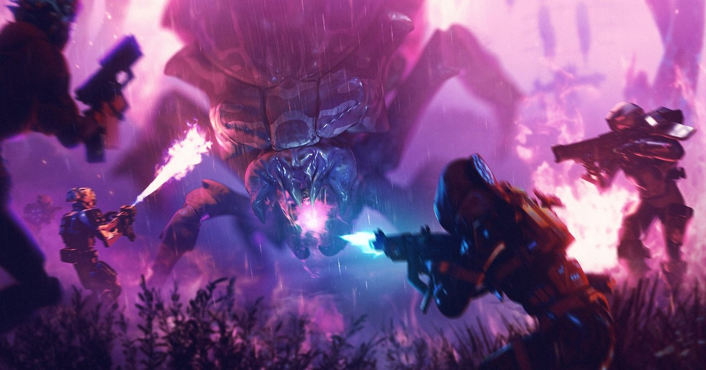

Marathon's Symbiosis update lands December 8 — PvE Expedition, the Bishop shell, and a free week to try it all
Bungie showed off the Bishop shell in a new cinematic on Monday — a fast, blade-wielding Runner built for close-range kills. It's the face of Symbiosis, Marathon's biggest update yet, arriving December 8 with a permanent PvE mode, a 3v3 Deathmatch beta, a reworked Perimeter, and a full week where the whole game is free.

---
Disclosure: this post contains affiliate links. I earn a commission on qualifying purchases.
Bungie is betting Marathon's future on a single update — and on Monday, it showed off the sharpest edge of it. The studio posted a cinematic trailer for Bishop, the new Runner shell coming with the Symbiosis update, and the message was blunt: "Bishop Shell // Hunter Killer. Strike once, Strike fast."
Symbiosis lands December 8 on PlayStation 5, Xbox Series X|S, and PC. It is free for everyone who owns the game, and for one week after it drops, it is free for everyone who doesn't.
Meet the Bishop
Bishop is built around one fantasy, in Bungie's own words: "a fast, surgical blade-wielding robot." The cinematic shows why — an extendable blade in one arm, boosters on the legs, closing gaps in a blink and cutting through a group of Runners at close range.
It is the first new shell since launch, and it arrives as the face of an update that is less about adding content and more about rethinking who Marathon is for.
The headline: a PvE mode, at last
The biggest change in Symbiosis is Expedition — a permanent PvE-only mode, the first time Marathon has offered a way to play without rival Runners hunting you. It runs as a three-run series, playable solo or with a crew, with in-run upgrades called Flash Boosts that reshape your build as you go. Bungie describes it as a cooperative roguelite with its own queue, and says the third run is a Critical Incident whose difficulty you can raise for better rewards. A second phase is planned for March.
That is the direct answer to the game's biggest complaint since launch: every run carried PvP risk, and there was no way to learn the game — or just enjoy the world — without another player ending it for you.
Everything else in the update
• Deathmatch (beta) — an experimental 3v3 team deathmatch mode. Short matches, points for kills, and no permanent loadout on the line, built as a low-commitment way to sharpen aim and test kits.
• Limbo — a new social space where Runners can meet up, test weapons on firing ranges, and challenge each other in a dueling pit.
• A reworked Perimeter — the map is transformed by spreading fungal growth and alien life, with two new areas: the underground Burrows and the submerged Reservoir. Something called the Tick Queen lurks deep below.
• New weapons — the V17 Flamethrower for short-range area denial and the Maverick, a revolver with a hand-cannon feel. The reveal trailer also showed a throwing knife and a hack grenade.
The free week
From December 8 through December 15, anyone can play the full game at no cost — Expedition, Deathmatch, Limbo, Bishop, the new weapons, the reworked Perimeter, all of it. Bungie has not said whether progress from the free week carries over, so treat that as unconfirmed for now.
Why this one matters
Marathon launched March 5, 2026, at $39.99 as a PvP-first extraction shooter — three-person crews scavenging Tau Ceti IV, extracting with their loot or losing all of it. It cracked Steam's best-seller charts within hours of pre-orders opening, then never found the audience Bungie needed. Polygon called Symbiosis "the culmination of Bungie's months-long work to revitalize Marathon after what was perceived as a poor launch."
This is the update that decides whether that revitalization works. A permanent PvE mode, a social hub, a low-stakes PvP mode, a new shell, and a free week is not a patch — it is a second launch. December 8 is when we find out if anyone comes back.
Sources: Bungie Officially Shows Off Marathon's Most Exciting Update Feature (Polygon) · Marathon's Symbiosis update lands December 8 with a PvE Expedition mode, 3v3 Deathmatch beta, a Bishop shell and a free play week (Hejirapp, via PlayStation Blog) · Marathon Symbiosis Update on 8 December: PvE Mode, 3v3 Deathmatch (Kuliz) · Bungie Reveals New Samurai-Inspired Bishop Runner Shell for Marathon (GameRiv)
Gear up: Razer — mice, keyboards, headsets and laptops.